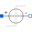

ArmatureStrokeArmature stroke of both moving coil actuator models after a voltage step at time t=0 |
|
Diagram
{kind=link}
Information
This information is part of the Modelica Standard Library maintained by the Modelica Association.
Have a look at ConstantActuator and at PermeanceActuator for an explanation of both actuator models.
A voltage step at time t=0 is applied to both actuator models. In each model, the armature and an attached load mass perform a stroke between the two stoppers included in cActuator.armature and pmActuator.armature respectively. Simulate for 0.05 s and plot vs. time (same physical quantities together in a common diagram for comparison):
cActuator.p.i // input current to converter constant model
pmActuator.p.i // input current to permeance model
cActuator.armature.flange_a.f // actuator force of converter constant model
pmActuator.armature.flange_a.f // actuator force of permeance model
cActuator.x // armature position of converter constant model
pmActuator.x // armature position of permeance model
cActuator.L // inductance of converter constant model
pmActuator.L // inductance of permeance model
The initial current rise in both actuator models is due to the inductance of the actuator coil. After acceleration of the armature and the load, the current decreases due to the motion-induced back-emf. Bouncing occurs when the armatures of both models arrive at the stopper at maximum armature position. The bouncing is rather intense due to the absence of any kind of external friction in this simple example (apart from the nonlinear damping in the stopper elements). After decay of the bouncing, both actuators operate under conditions valid for a blocked armature.
Whereas the steady state current is the same in both models, the steady state actuator force is not due to the neglect of the non-linear force component in the converter constant model. Differences in the current rise of both models are due to the neglect of the coil inductance variation in the converter constant model.
Components (8)
| pmGround |
Type: Ground |
|
|---|---|---|
|  | pmSource |
Type: StepVoltage Description: Steady state current 1.5A |
| pmActuator |
Type: PermeanceActuator Description: Moving coil actuator described with permeance model |
|
| pmLoad |
Type: Mass Description: Load to be moved in addition to the armature mass |
|
| cGround |
Type: Ground |
|
| cSource |
Type: StepVoltage Description: Steady state current 1.5A |
|
| cActuator |
Type: ConstantActuator Description: Moving coil actuator described with converter constant |
|
| cLoad |
Type: Mass Description: Load to be moved in addition to the armature mass |